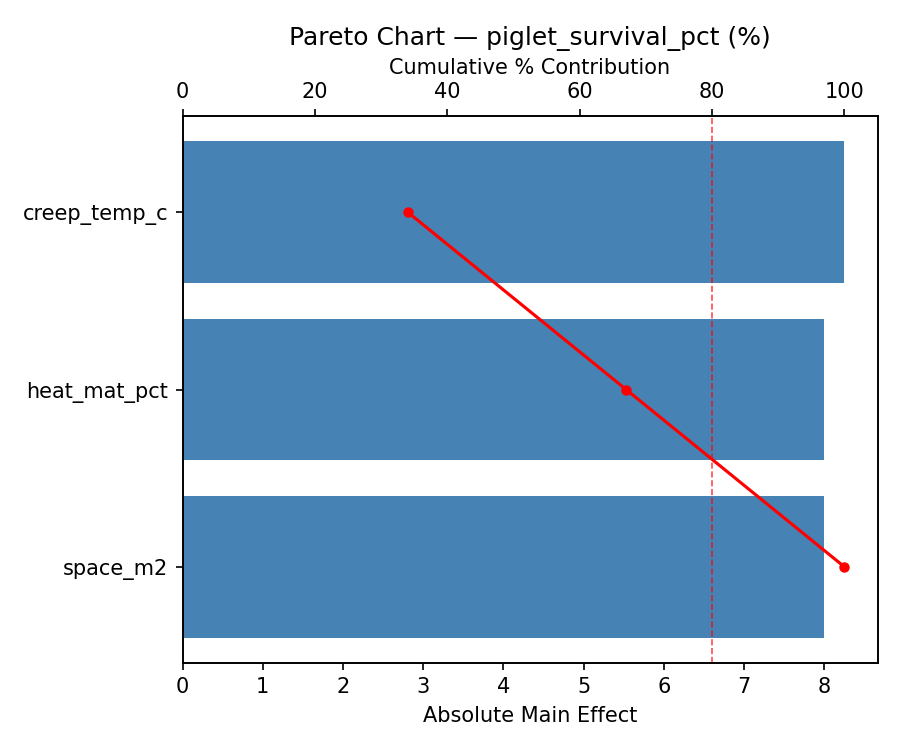
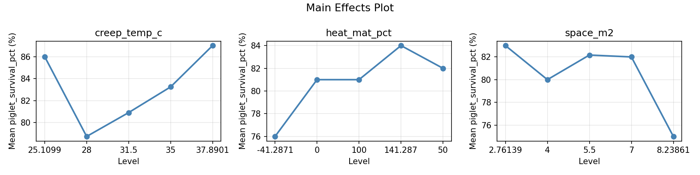
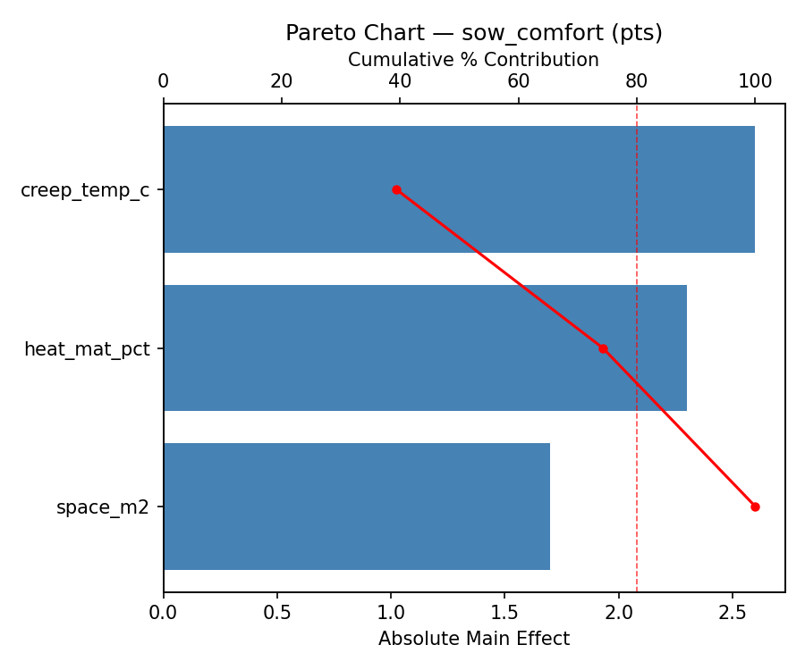
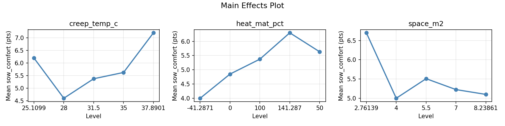
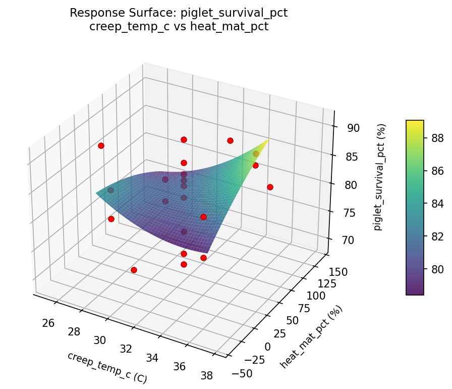
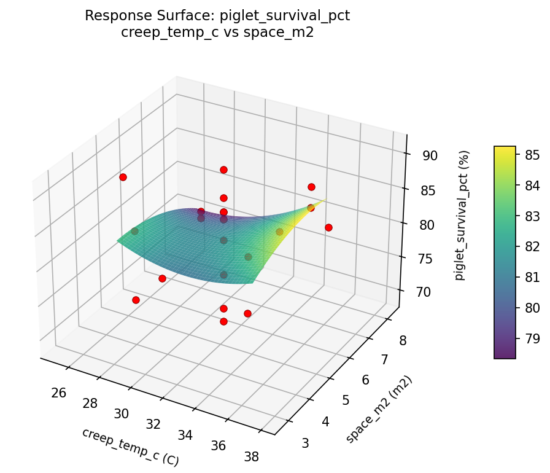
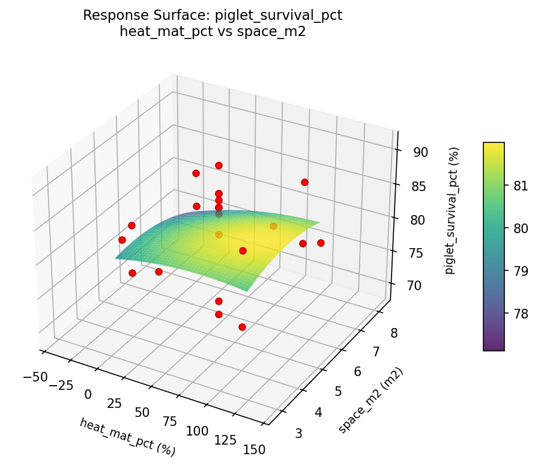
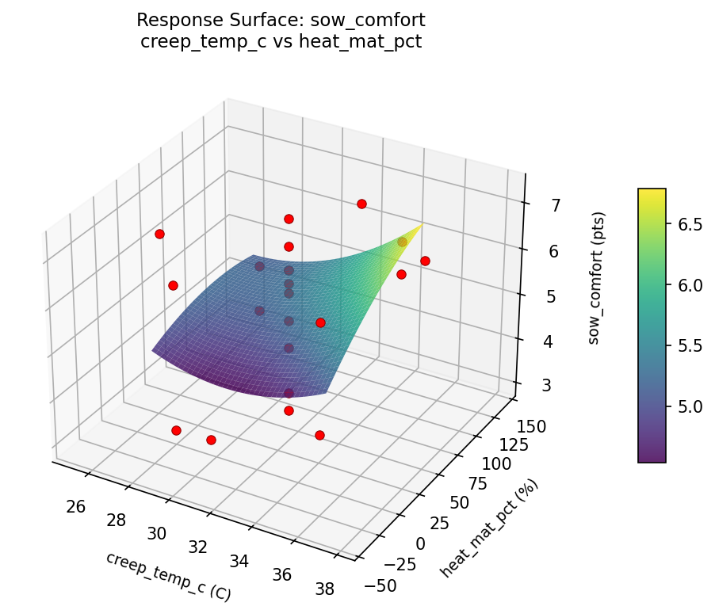
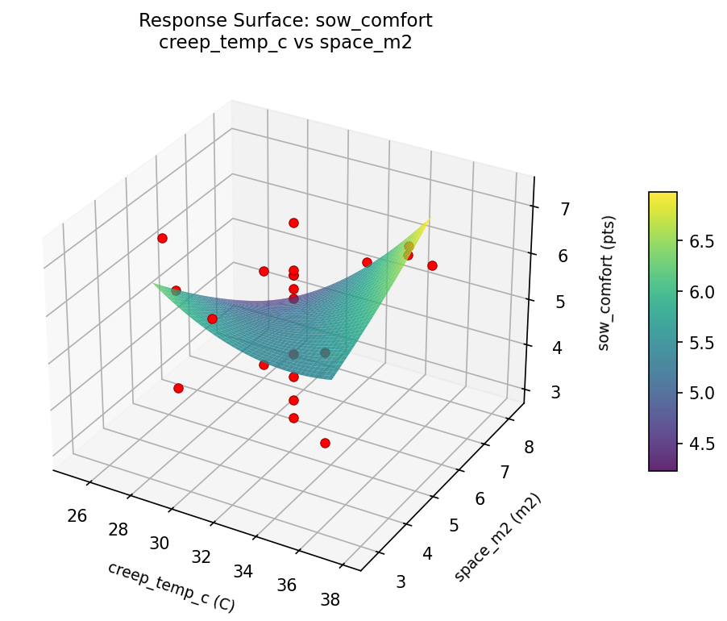
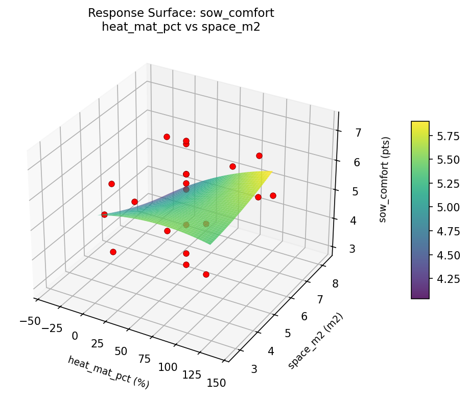

Summary
This experiment investigates pig farrowing pen design. Central composite design to maximize piglet survival and sow comfort by tuning creep area temperature, pen floor type heating, and space allowance.
The design varies 3 factors: creep temp c (C), ranging from 28 to 35, heat mat pct (%), ranging from 0 to 100, and space m2 (m2), ranging from 4 to 7. The goal is to optimize 2 responses: piglet survival pct (%) (maximize) and sow comfort (pts) (maximize). Fixed conditions held constant across all runs include breed = large_white, litter size = 12.
A Central Composite Design (CCD) was selected to fit a full quadratic response surface model, including curvature and interaction effects. With 3 factors this produces 22 runs including center points and axial (star) points that extend beyond the factorial range.
Quadratic response surface models were fitted to capture potential curvature and factor interactions. The RSM contour plots below visualize how pairs of factors jointly affect each response.
Key Findings
For piglet survival pct, the most influential factors were creep temp c (34.0%), heat mat pct (33.0%), space m2 (33.0%). The best observed value was 91.0 (at creep temp c = 31.5, heat mat pct = 50, space m2 = 2.76139).
For sow comfort, the most influential factors were creep temp c (39.4%), heat mat pct (34.8%), space m2 (25.8%). The best observed value was 7.3 (at creep temp c = 31.5, heat mat pct = 50, space m2 = 2.76139).
Recommended Next Steps
- Run confirmation experiments at the predicted optimal settings to validate the model.
- Consider whether any fixed factors should be varied in a future study.
Experimental Setup
Factors
| Factor | Low | High | Unit |
|---|
creep_temp_c | 28 | 35 | C |
heat_mat_pct | 0 | 100 | % |
space_m2 | 4 | 7 | m2 |
Fixed: breed = large_white, litter_size = 12
Responses
| Response | Direction | Unit |
|---|
piglet_survival_pct | ↑ maximize | % |
sow_comfort | ↑ maximize | pts |
Configuration
{
"metadata": {
"name": "Pig Farrowing Pen Design",
"description": "Central composite design to maximize piglet survival and sow comfort by tuning creep area temperature, pen floor type heating, and space allowance"
},
"factors": [
{
"name": "creep_temp_c",
"levels": [
"28",
"35"
],
"type": "continuous",
"unit": "C"
},
{
"name": "heat_mat_pct",
"levels": [
"0",
"100"
],
"type": "continuous",
"unit": "%"
},
{
"name": "space_m2",
"levels": [
"4",
"7"
],
"type": "continuous",
"unit": "m2"
}
],
"fixed_factors": {
"breed": "large_white",
"litter_size": "12"
},
"responses": [
{
"name": "piglet_survival_pct",
"optimize": "maximize",
"unit": "%"
},
{
"name": "sow_comfort",
"optimize": "maximize",
"unit": "pts"
}
],
"settings": {
"operation": "central_composite",
"test_script": "use_cases/295_pig_farrowing/sim.sh"
}
}
Experimental Matrix
The Central Composite Design produces 22 runs. Each row is one experiment with specific factor settings.
| Run | creep_temp_c | heat_mat_pct | space_m2 |
|---|
| 1 | 31.5 | 50 | 5.5 |
| 2 | 35 | 0 | 7 |
| 3 | 28 | 100 | 4 |
| 4 | 31.5 | 141.287 | 5.5 |
| 5 | 31.5 | 50 | 5.5 |
| 6 | 25.1099 | 50 | 5.5 |
| 7 | 31.5 | 50 | 2.76139 |
| 8 | 31.5 | 50 | 5.5 |
| 9 | 35 | 100 | 4 |
| 10 | 37.8901 | 50 | 5.5 |
| 11 | 31.5 | 50 | 5.5 |
| 12 | 31.5 | -41.2871 | 5.5 |
| 13 | 31.5 | 50 | 5.5 |
| 14 | 28 | 0 | 7 |
| 15 | 31.5 | 50 | 5.5 |
| 16 | 35 | 0 | 4 |
| 17 | 31.5 | 50 | 8.23861 |
| 18 | 35 | 100 | 7 |
| 19 | 31.5 | 50 | 5.5 |
| 20 | 28 | 0 | 4 |
| 21 | 28 | 100 | 7 |
| 22 | 31.5 | 50 | 5.5 |
Step-by-Step Workflow
1
Preview the design
$ python doe.py info --config use_cases/295_pig_farrowing/config.json
2
Generate the runner script
$ python doe.py generate --config use_cases/295_pig_farrowing/config.json \
--output use_cases/295_pig_farrowing/results/run.sh --seed 42
3
Execute the experiments
$ bash use_cases/295_pig_farrowing/results/run.sh
4
Analyze results
$ python doe.py analyze --config use_cases/295_pig_farrowing/config.json
5
Get optimization recommendations
$ python doe.py optimize --config use_cases/295_pig_farrowing/config.json
6
Generate the HTML report
$ python doe.py report --config use_cases/295_pig_farrowing/config.json \
--output use_cases/295_pig_farrowing/results/report.html
Real-World Experiment Workflow
ℹ
Physical Farm & Livestock Experiment? Use the Manual Workflow
Livestock experiments involve real animals, feed, facilities, and biological responses that can't be simulated. The simulation script above is for demonstration. For your real experiments, use record, status, and export-worksheet.
$ python doe.py export-worksheet --config use_cases/295_pig_farrowing/config.json \
--format csv --output worksheet.csv
$ python doe.py status --config use_cases/295_pig_farrowing/config.json
$ python doe.py record --config use_cases/295_pig_farrowing/config.json --run 1
$ python doe.py analyze --config use_cases/295_pig_farrowing/config.json --partial
$ python doe.py analyze --config use_cases/295_pig_farrowing/config.json
$ python doe.py optimize --config use_cases/295_pig_farrowing/config.json
$ python doe.py report --config use_cases/295_pig_farrowing/config.json \
--output report.html
✔
Works Without a Test Script
The analysis pipeline doesn't care how results were produced. Record your measurements with record, and the full analysis, optimization, and reporting pipeline works identically. Use --partial to get early insights before all runs are complete.
Features Exercised
| Feature | Value |
|---|
| Design type | central_composite |
| Factor types | continuous (all 3) |
| Arg style | double-dash |
| Responses | 2 (piglet_survival_pct ↑, sow_comfort ↑) |
| Total runs | 22 |
Analysis Results
Generated from actual experiment runs using the DOE Helper Tool.
Response: piglet_survival_pct
Top factors: creep_temp_c (34.0%), heat_mat_pct (33.0%), space_m2 (33.0%).
Pareto Chart

Main Effects Plot

Response: sow_comfort
Top factors: creep_temp_c (39.4%), heat_mat_pct (34.8%), space_m2 (25.8%).
Pareto Chart

Main Effects Plot

Response Surface Plots
3D surfaces fitted with quadratic RSM. Red dots are observed data points.
piglet survival pct creep temp c vs heat mat pct

piglet survival pct creep temp c vs space m2

piglet survival pct heat mat pct vs space m2

sow comfort creep temp c vs heat mat pct

sow comfort creep temp c vs space m2

sow comfort heat mat pct vs space m2

Full Analysis Output
RSM surface: rsm_piglet_survival_pct_creep_temp_c_vs_heat_mat_pct.png
RSM surface: rsm_piglet_survival_pct_creep_temp_c_vs_space_m2.png
RSM surface: rsm_piglet_survival_pct_heat_mat_pct_vs_space_m2.png
RSM surface: rsm_sow_comfort_creep_temp_c_vs_heat_mat_pct.png
RSM surface: rsm_sow_comfort_creep_temp_c_vs_space_m2.png
RSM surface: rsm_sow_comfort_heat_mat_pct_vs_space_m2.png
=== Main Effects: piglet_survival_pct ===
Factor Effect Std Error % Contribution
--------------------------------------------------------------
creep_temp_c 8.2500 1.2304 34.0%
heat_mat_pct 8.0000 1.2304 33.0%
space_m2 8.0000 1.2304 33.0%
=== Summary Statistics: piglet_survival_pct ===
creep_temp_c:
Level N Mean Std Min Max
------------------------------------------------------------
25.1099 1 86.0000 0.0000 86.0000 86.0000
28 4 78.7500 4.1130 74.0000 84.0000
31.5 12 80.9167 6.7076 69.0000 91.0000
35 4 83.2500 4.3493 77.0000 87.0000
37.8901 1 87.0000 0.0000 87.0000 87.0000
heat_mat_pct:
Level N Mean Std Min Max
------------------------------------------------------------
-41.2871 1 76.0000 0.0000 76.0000 76.0000
0 4 81.0000 3.5590 77.0000 84.0000
100 4 81.0000 6.0553 74.0000 87.0000
141.287 1 84.0000 0.0000 84.0000 84.0000
50 12 82.0000 6.8091 69.0000 91.0000
space_m2:
Level N Mean Std Min Max
------------------------------------------------------------
2.76139 1 83.0000 0.0000 83.0000 83.0000
4 4 80.0000 5.3541 74.0000 85.0000
5.5 12 82.1667 6.7398 69.0000 91.0000
7 4 82.0000 4.2426 78.0000 87.0000
8.23861 1 75.0000 0.0000 75.0000 75.0000
=== Main Effects: sow_comfort ===
Factor Effect Std Error % Contribution
--------------------------------------------------------------
creep_temp_c 2.6000 0.2791 39.4%
heat_mat_pct 2.3000 0.2791 34.8%
space_m2 1.7000 0.2791 25.8%
=== Summary Statistics: sow_comfort ===
creep_temp_c:
Level N Mean Std Min Max
------------------------------------------------------------
25.1099 1 6.2000 0.0000 6.2000 6.2000
28 4 4.6000 1.3687 3.0000 6.2000
31.5 12 5.3750 1.3308 3.1000 7.3000
35 4 5.6250 1.1871 3.9000 6.5000
37.8901 1 7.2000 0.0000 7.2000 7.2000
heat_mat_pct:
Level N Mean Std Min Max
------------------------------------------------------------
-41.2871 1 4.0000 0.0000 4.0000 4.0000
0 4 4.8500 1.6583 3.0000 6.3000
100 4 5.3750 1.0243 4.1000 6.5000
141.287 1 6.3000 0.0000 6.3000 6.3000
50 12 5.6333 1.3466 3.1000 7.3000
space_m2:
Level N Mean Std Min Max
------------------------------------------------------------
2.76139 1 6.7000 0.0000 6.7000 6.7000
4 4 5.0000 1.1690 3.9000 6.2000
5.5 12 5.5083 1.3964 3.1000 7.3000
7 4 5.2250 1.6070 3.0000 6.5000
8.23861 1 5.1000 0.0000 5.1000 5.1000
Pareto chart (piglet_survival_pct): use_cases/295_pig_farrowing/results/analysis/pareto_piglet_survival_pct.png
Pareto chart (sow_comfort): use_cases/295_pig_farrowing/results/analysis/pareto_sow_comfort.png
Main effects (piglet_survival_pct): use_cases/295_pig_farrowing/results/analysis/main_effects_piglet_survival_pct.png
Main effects (sow_comfort): use_cases/295_pig_farrowing/results/analysis/main_effects_sow_comfort.png
Optimization Recommendations
=== Optimization: piglet_survival_pct ===
Direction: maximize
Best observed run: #18
creep_temp_c = 31.5
heat_mat_pct = 50
space_m2 = 2.76139
Value: 91.0
RSM Model (linear, R² = 0.1973, Adj R² = 0.0636):
Coefficients:
intercept +81.4545
creep_temp_c -1.9385
heat_mat_pct -0.4447
space_m2 -2.3357
RSM Model (quadratic, R² = 0.6618, Adj R² = 0.4082):
Coefficients:
intercept +76.7440
creep_temp_c -1.9385
heat_mat_pct -0.4447
space_m2 -2.3357
creep_temp_c*heat_mat_pct -1.2500
creep_temp_c*space_m2 -0.7500
heat_mat_pct*space_m2 -1.2500
creep_temp_c^2 +1.7053
heat_mat_pct^2 +2.6053
space_m2^2 +2.7553
Curvature analysis:
space_m2 coef=+2.7553 convex (has a minimum)
heat_mat_pct coef=+2.6053 convex (has a minimum)
creep_temp_c coef=+1.7053 convex (has a minimum)
Notable interactions:
creep_temp_c*heat_mat_pct coef=-1.2500 (antagonistic)
heat_mat_pct*space_m2 coef=-1.2500 (antagonistic)
creep_temp_c*space_m2 coef=-0.7500 (antagonistic)
Predicted optimum (from quadratic model):
creep_temp_c = 31.5
heat_mat_pct = 50
space_m2 = 2.76139
Predicted value: 90.1927
Model quality: Moderate fit — use predictions directionally, not precisely.
Factor importance:
1. space_m2 (effect: 11.8, contribution: 41.4%)
2. creep_temp_c (effect: 9.0, contribution: 31.5%)
3. heat_mat_pct (effect: 7.8, contribution: 27.1%)
=== Optimization: sow_comfort ===
Direction: maximize
Best observed run: #18
creep_temp_c = 31.5
heat_mat_pct = 50
space_m2 = 2.76139
Value: 7.3
RSM Model (linear, R² = 0.1595, Adj R² = 0.0194):
Coefficients:
intercept +5.4000
creep_temp_c -0.4609
heat_mat_pct -0.2819
space_m2 -0.3151
RSM Model (quadratic, R² = 0.5455, Adj R² = 0.2046):
Coefficients:
intercept +4.4303
creep_temp_c -0.4609
heat_mat_pct -0.2819
space_m2 -0.3151
creep_temp_c*heat_mat_pct -0.2875
creep_temp_c*space_m2 +0.0125
heat_mat_pct*space_m2 +0.1125
creep_temp_c^2 +0.2949
heat_mat_pct^2 +0.5649
space_m2^2 +0.5949
Curvature analysis:
space_m2 coef=+0.5949 convex (has a minimum)
heat_mat_pct coef=+0.5649 convex (has a minimum)
creep_temp_c coef=+0.2949 convex (has a minimum)
Predicted optimum (from quadratic model):
creep_temp_c = 31.5
heat_mat_pct = 50
space_m2 = 2.76139
Predicted value: 6.9884
Model quality: Moderate fit — use predictions directionally, not precisely.
Factor importance:
1. space_m2 (effect: 2.4, contribution: 44.7%)
2. heat_mat_pct (effect: 1.5, contribution: 29.2%)
3. creep_temp_c (effect: 1.4, contribution: 26.1%)